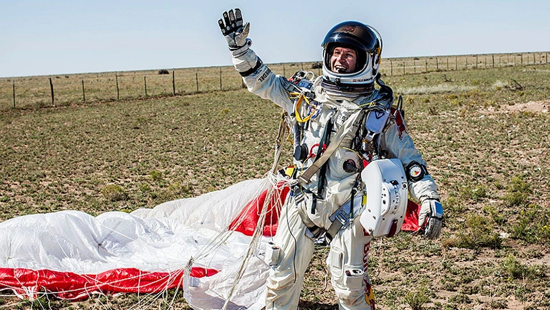
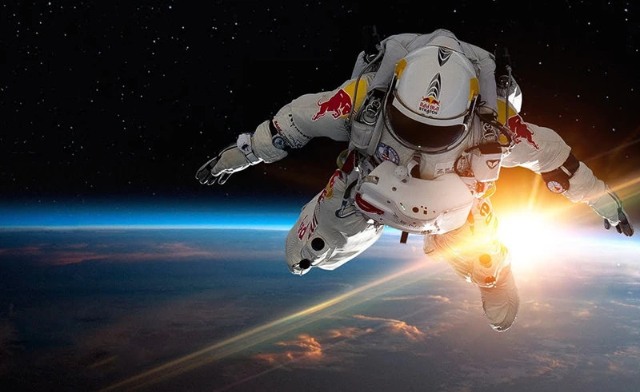
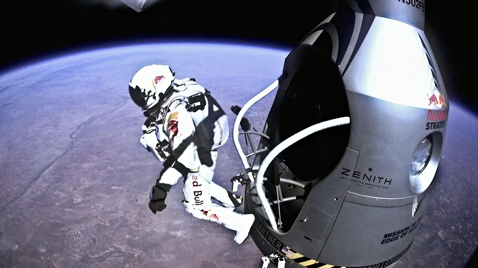
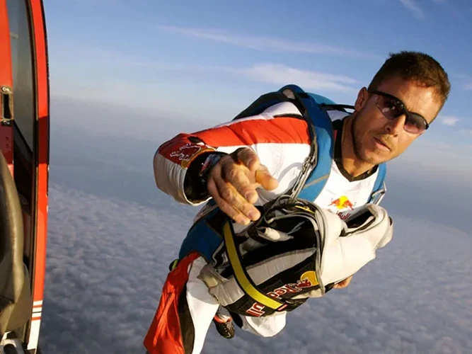
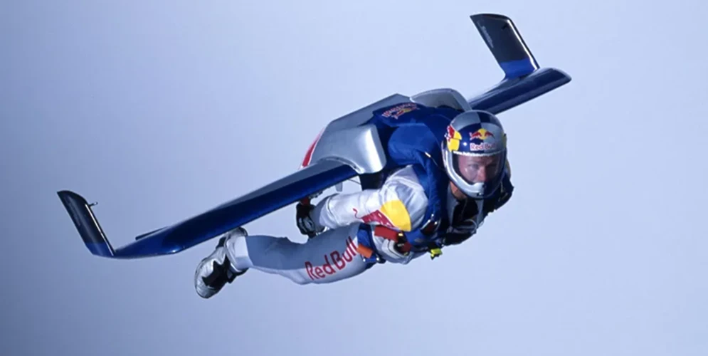
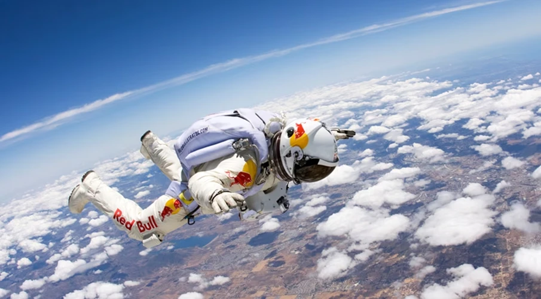
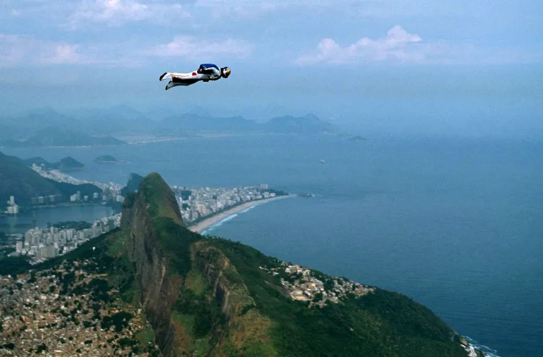

FELIX BAUMGARTNER: THE MAN WHO JUMPED THE STRATOSPHERE
"Breaking the speed of sound outside of an aircraft. He pushed human ability to its ultimate limit."

Born in Austria, Felix Baumgartner is an iconic name synonymous with pushing human boundaries, particularly in aerial BASE jumping and extreme skydiving. A former military parachutist, he redefined what was physically possible, transforming himself from a leading BASE jumper into a scientific instrument for high-altitude exploration.



His most monumental achievement was the Red Bull Stratos mission in 2012. Baumgartner ascended to an altitude of 39,045 meters (128,100 feet) in a pressurized capsule before freefalling back to Earth. In doing so, he became the first human to intentionally break the sound barrier outside of a vehicle, reaching a speed of Mach 1.25 (1,357.6 km/h).

This was a monumental mission for aerospace. The jump delivered critical data on how the human body reacts to breaking the sound barrier.
| Record Category | Key Stat |
|---|---|
| Highest Altitude Jump | 39,045 meters |
| First to Break Sound Barrier | Reached Mach 1.25 |
| Longest Freefall Distance | 36,402 meters |



